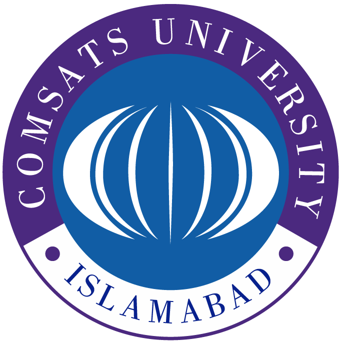

COMSATS UNIVERSITY ISLAMABAD
Home Department Admissions Academics Exams
Historic Prespective :
Click here!
The origins of the COMSATS University Islamabad (CUI) date back to 1998. The university is one of the leading universities of Pakistan with five (05) broad faculties including Engineering, Information Science and Technology, Business Administration and Architecture and Design with more than 36,000 students and offering 100-degree programs. The CUI is well-known for its trend-setting pedagogical approach, allowing for interdisciplinary methodologies to learning and problem solving, experimentation, and insight. It is ranked among top 3 universities of Pakistan and world’s best 800 universities
Biuld a future where people live in harmony with nature.